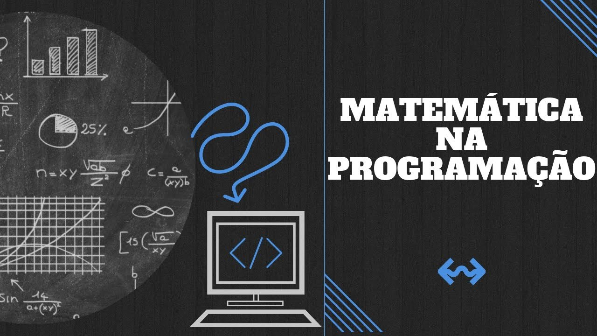
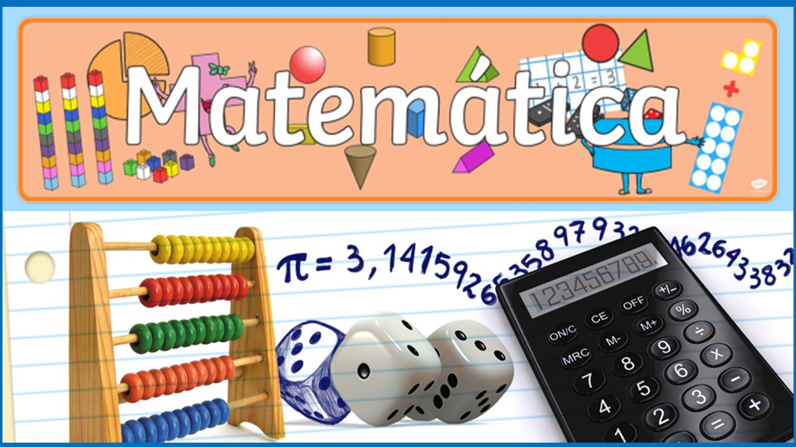

- 2B - MAT II
- 3A - MAT
- 3B - MAT
Turma que optou pela área das Exatas, possuindo uma trilha de aprendizagem chamada Matemática II, que é voltada para Programação, sendo está a que estou ministrando com eles. Ao todo são 2 aulas semanais e as realizamos dentro do Laboratório de Informática ou Sala das Plataformas, para terem acesso a um computador cada.
Turma do currículo antigo, possuindo 5 aulas semanais, das quais uma delas é realizada no Laboratório de Informática voltada a Plataforma Khan Academy e outras 4 aulas que são voltadas para o conteúdo. Ministro está aula e gosto de trabalhar com o terceiro ano, o que já faz alguns anos que tenho. Procuro diversificar os métodos.
Turma do currículo antigo, possuindo 5 aulas semanais, das quais uma delas é realizada no Laboratório de Informática voltada a Plataforma Khan Academy e outras 4 aulas que são voltadas para o conteúdo. Ministro está aula e gosto de trabalhar com o terceiro ano, o que já faz alguns anos que tenho. Procuro diversificar os métodos.
